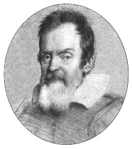

Galileo Galilei
(Ottavio Leoni’nin [1578-1630], portre çalışması)
İnsanlarla diğer hayvanlar arasındaki fark her ne kadar çok büyükse de insanların kendi aralarında da büyük farklar olabileceğini söyleyen biri çıksa belki de akılsızca bir laf etmiş olmaz. Bir ile bin arasındaki oran nedir? Bu konuda yaygın söz, bin kişinin bir adam etmediği yerde tek bir kişinin bin kişiye bedel olduğu şeklindedir. Bu fark, zihinlerin farklı yeteneklere sahip olmasından kaynaklanır ve ben sonuçta, bunu insanın filozof olup olmayışına bağlıyorum; çünkü felsefe[2] onunla beslenmesini bilenler için gerçek bir besin kaynağı oluşturur. Felsefeden az ya da çok miktarda nasiplerini almaları durumuna göre insanlar, geniş halk kitlesinden ayrı bir noktaya, kimi az, kimi çok derecede yükselirler. Kim daha yükseklerdeki bir noktaya ulaşmayı hedeflerse kendini o denli farklı kılmaya çalışır. Hedef belirlemesi için gözünüzü çevireceğiniz nokta “doğa kitabı”dır. Zaten felsefenin asıl konusu “doğa kitabı”nı incelemektir. Doğanın kitabında okunan her şey, gücü her şeyden üstün Yaratan’ın eseri olması nedeniyle, birbiriyle müthiş bir orantı içinde bulunmasına rağmen yine de bu eser ve eserin ustalığında gözümüze çarptığı ve algılayışımızı etkilediği oranda değer ifade eder. Ben şuna inanıyorum ki insan zihninin doğasından kaynaklanan[3] yetenekleriyle öğreneceği şeyler arasında “Evren’in yapısını öğrenme çabası” ilk sırayı alır. Bu çaba, Evren’in her şeyi sinesinde barındırması bakımından büyüklükte kıyas kabul etmeyeceği gibi tüm şeylerin temeli ve her şeyi kucaklıyor oluşu nedeniyle de çabaların en soylusudur. Bu itibarla, zihin gücünden yana, bir insanın diğer insanlardan farklılaşması büyük çapta gerçekleşmemiş olsa bile, Batlamyus (Ptolemaios) ve Copernicus, Evren’in yapısını inceleme konusunda en çok okumuş, en çok kafa yormuş, en çok irdelemeye girişmiş kişiler olarak kabul edilmelidirler. Benim yazdığım bu Dialoghi (Diyaloglar) kitabı, isimlerini verdiğim bu iki kişinin yapıtları etrafında yoğunlaştığından, Siz Saygıdeğer Dük Hazretleri’nden başka bir kimseye ithaf edilmemelidir diye düşündüm. Dialoghi kitabındaki görüşlerim, Evren’in yapısına ilişkin fikirler öne sürerek kitaplar yazanlar arasında en büyük dehalar olarak kabul ettiğim bu iki kişinin fikirlerine dayandığından saygıda kusur etmemek amacıyla kitabımı, şan ve himayeye kavuşsun diye bana en yakın kabul ettiğim kişiye ithaf etmeliyim. Benim bilgilenme yeteneğime bu iki ismin tuttuğu ışık o denli büyük olmuştur ki bu eserim büyük çapta onlara ait sayılabilir. Fakat yazmam için benden gereken zamanı, huzuru, yardımı ve yorulmak bilmeyen takdirlerini esirgemeyen iyiliksever âlicenapları sayesinde bu kitap gün ışığına kavuşabilmiştir. İfade ettiklerimden ötürü bu kitabı, Saygıdeğer Dük, her zamanki tevazuyla kabul buyurunuz. Siz, gerçeklere sevdalı okurlar, bu kitapta haz duyulacak büyük bilgilere ve coşku kaynaklarına rastlarsanız, bu kaynakları kendinize ait sayabilirsiniz.
Siz ki maddi sıkıntılardan hiçbirinin huzurunuzu kaçırmasına izin vermeyen mutlu hükümdarlığınızın tadını çıkararak yaşamaktasınız, daima bu yaşantı içinde cömert ve hayırlı alışkanlıklarınızı sürdürmenizi dilerken önünüzde tevazuyla eğilirim.
Siz saygıdeğer ve huzur kaynağı Toscana Dükü’nün mütevazı ve sadık kölesi ve tebası.
Galileo Galilei